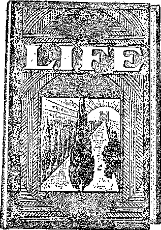

A JOURNAL OF FACT HOPE AND COURAGE
in this issue
A GLIMPSE AT THE U.S.A.
MEDICAL “PROGRESS”
QUEEN-REARING
HINTS ON HEALTH
CAPITAL PUNISHMENT
INFORMING THE PEOPLE
ninth of a series of radio lectures on good government, by Judge Rutherford
EVERY OTHER WED N E S D A Y
5c a copy - $1.00 a year - Canada & Foreign $1.50
Volume X - No. 260 September 4, 192 9
Contents
Labor and Economics
Old Age Pensions In Ten States
Social and Educational
A Glimpse at the U. S. A. ................ 771
Drawing the Colob Line ............... 798
Manufacturing and Mining
Inferior Mohtab Used in Great Pyramid .......... 778
Ireland Will Build Ford Tractors ............ 779
Finance—Commerce—Transportation On Making Amebica Safe ........... 785
One Method of Chain Stokes ............. 790
Political—Domestic and Foreign
Italian Disagreement on Education ........... 779
The Dictatorships of Europe .............. 780
Capital Punishment ................. 789
Agriculture and Husbandry Queen-Peaking .....
Science and Invention
Home Talkies in Britain ............... 780
Poison Gas Research in Britain ............. 782
Home and Health
SCIENTIFIC AMERICAN, Please Copy .......... 774
Principles and Practice of Medicine ........... 774
Eeligion and Philosophy
Bleeding Two Trainloads a Day .....
Bible Question and Answer .............. 798
The Ohit.dben’s Own Radio Story ............ 799
Published every other Wednesday1 at 117 Adams Street, Brooklyn, N. Y., U. S. A., by WOODWORTH, KNORR & MARTIN
Copartners and Proprietors Address: 117 Adams Street, Brooklyn, N. T., U. S. A. CLAYTON J. WOODWORTH .. Editor ROBERT J. MARTIN .. Business Manager NATHAN H. KNORR.. Secretary and Treasurer
Five Cents a Copy—§1.00 a Year Make Remittances to THE GOLDEN AGE Notice to Subscribers: We do not, as a rule, send an1 acknowledgment of a renewal or a new subscription. A renewal blank (carrying notice of expiration) is sent with the journal one month before the subscription expires. Change of address, when requested, may be expected to appear on address label within one month.
Foreign Offices
British ............. 34 Craven Terrace, London, W. 2, England Canadian ...........40 Irwin Avenue, Toronto 5, Ontario, Canada
Australasian . . .7 Beresford Rd., Strathfield, Sydney, N. S. W„ Australia South Africa ............ 6 Lelie Street, Cape Town, South Africa
Entered as second-class matter at Brooklyn, N, Y., under the Act of March 3, 1879.
Volume X Brooklyn, N. Y., Wednesday, September 4, 1929 Number 260
A Glimpse at the LL S* A.
EVERY honest man knows that no man or class of men, dressed in any kind of garb, droning out any kind of words, under any kind of steeple, has personal influence with Almighty God; for God is no respecter of persons. Ceremonies mean nothing to Him. Honesty in the inward parts, truth, sincerity, means everything.
If you were the God of justice, what would you think if you heard some well-fed, well-dressed man, living in the best house on his street, trying to insinuate to some poor hardworking, illiterate, superstitious mortal that on a down-payment of say $50, or so much down and so much a month, he could use his influence with you to get the man’s grandmother out of hell?
If a man really had power to get anybody out of hell, what kind of man wuuld he be if he held out for a money consideration? Thus, if you saw a poor aged woman suffering in a burning building, wmuld you come to the door and offer to unlock it and let her out on a payment of a stated sum or a certain amount down and so much a month thereafter ? If you did, what kind of man would you be?
Again, if you had made a careful examination of all the places in the Bible where the words sheet, hades, gehenna and tartaroo appear, and you w’ere thoroughly convinced that no honest man could make such an examination without denouncing the doctrine of eternal torture as a fraud, what would you think of men who still continue to teach the doctrine, or to advocate it, though their attention has many times been drawn to proofs that it could not be true? So much for only a few of the religious transgressions.
Every honest man knows that the wealth of the United States is more and more being gathered into the great cities and wasted there in the most riotous extravagance, while the common people of the country, millions of them, are without employment and experience great hardships in getting along at all in the wealthiest country in the world.
What wmuld you do if you knew that one of the greatest banks in New York city was a direct party to the sugar steal a few years ago in wfliich a billion dollars were stolen from the housewives of America right in the heart of the canning season? They financed a plan for grabbing all the sugar in sight and stuffing it into warehouses, ^whence it was later doled out at prices running as high as thirty-two cents a pound. Nothing was ever done about this either, except that a very few arrests were made of small jobbers who had no knowledge whatever of how the big steal was engineered or what it was all about.
What would you do if you knew that another great bank in New York city was the direct cause of America’s entering the World War and losing one hundred thousand of the finest young men the world ever saw? Gabriel Hanotaux, French minister of foreign affairs, tells all about it in his memoirs. He tells who the men were, and the banking-house they represented.
These financiers, with the late American ambassador to France, came to him early in the war, at a time when France was whipped, and guaranteed that, if France would stay in the war, they would put America into the war on the side of the Allies; and they did.
It has all been told on the floor of Congress how, after Mr. Wilson had been reelected because he kept us out of the war, the great New York banking-house carried out its promise to Mr. Hanotaux; and yet nothing has ever been done about it.
According to the story as told in Congress, twelve men high up in the newspaper’ world gathered together and made a list of the one hundred and twenty-five newspapers that con-
trol American opinion. By a careful process of elimination this was reduced to twenty-five; and the editorial policy of those papers was bought as one might buy so much garbage, provided garbage was what one wished to buy.
When the big papers began to churn for war, the little, papers took it up, the preachers took it up, the politicians took it up, the common people took it up, Congress took it up; and in six months’ time after the American people had expressed their mature judgment at the polls, that judgment was reversed and the promises made to Mr. Ilanotaux were redeemed. It is not nice to hear about it, is it?
Then there is the Power Trust. In 1928 the public utilities expended $28,000,000 for advertising. Does anybody suppose that they first collected that vast sum from the people and actually had it in their pockets and then threw it away? Not at all. That money was expended to infmence the same editorial columns that led America into the World War, only now the war is a war of the financiers against the people. But the same means of propaganda are used. The Power Trust wishes to control America.
The common people do not know that in some places in America current which costs less than 3/4c a kilowatt-hour to produce is sold to domestic users at twenty times its cost; nor do they know that in some cities the Big Business people get their power- for a tenth of that charged to private consumers. The bankers and the politicians are back of this and know all about it. These men are using the papers, not to fight for truth and honesty, but to fight the people and keep them in ignorance and subjection.
The reason the St. Paul road failed was because seven of its directors bought two of its power sites for $970,000, sold these to themselves under another name, for $5,000,000, and then sold the power back to the St. Paul road at such a high price that they could not ‘make a go of it’.
The public utility commissions, which ■were supposed to help the people, have turned out to be the people’s worst enemies. No matter how crooked the schemes hatched by unscrupulous custodians of the public’s funds, the public utility commissions are ever ready to give them the seal of their approval. Pennsylvania is a conspicuous sinner in this respect.
The public utility companies, in a fever to extract out of the common people every cent that they can get hold of, are inaugurating service charges or ready-to-serve charges or room charges, as a pretext to enable them to. shift burdens from the shoulders of the rich to those who have it hard to get along. Among the very worst sinners in this respect is the Scranton Gas and Water Company, which, after making fabulous millions out of the poor miners of the Lackawanna-Wyoming valley, is now raising its rates on both gas and water, all with the consent of the Pennsylvania public utility commission, and, of course, with the tacit approval of the simian press.
Then there is the matter of poisoning oneself by eating food cooked in aluminum. The Perfection Aluminum Company, of Cleveland, Ohio, has closed its doors to the manufacture of kitchen aluminumware. Doctor Murphy, of the Rockefeller Institute, New York, a cancer research organization, has announced to the world that cancer is caused by chemical ferments. In the medical profession, aluminum compounds are known as chemical ferments. The positive proof that the use of aluminum kitchen utensils is harmful may be had for the asking.
Of course, if you will write to the aluminum trust, as the Scientific American did, and if you will close your eyes and ears to all other evidence, you can get the same answer they got, and can go on using the thing that is undermining your health. People who wish to get onesided, opinions can always get them. The truth is harder to get and harder to proclaim. ■
During the years in which the American people have been using aluminum cooking utensils the rate of deaths from cancer has doubled. A dog in New Jersey whose mistress always fed it from an aluminum dish finally died of cancer of the rectum. It was "all right” till it died; and that may be the ease with you, Scientific American or Literary Digest to the contrary notwithstanding. Anyway, try some other form of utensil for six weeks, and see if you don’t feel much better.
President Hoover has just stated, in a noteworthy speech in New York, that m many large American cities murder can, apparently, be committed with impunity, and that even in such premeditated crimes as embezzlement and forgery the American record of shame makes us a disgrace in the eyes of the whole world. He said in part: “No part of the country, rural or urban, is immune. Life and property are relatively more unsafe than in any other civilized country in the world.”
The president’s speech was addressed to the Associated Press, and that was the right place to say it. What the people need is unpalatable truth. If the newspapers of America and the preachers of America and the politicians of America would tell the truth, the whole truth, and nothing but the truth, for just one week, America would be a better place in which to live.
The men who first uncovered the Teapot Dome scandals were not honored because they did so, but a determined effort was made to ruin them. Why was this? Why were there no presidential broadsides against the rascalities of Fall, Sinclair, Doheny, Stewart, Daugherty, Hays, and all the rest of them? Is it because the rascalities were not known? Every youth in the country knows about them and knows what these men did.
It is useless to talk about cleansing the country of crime when the great ecclesiastics, the great financiers and the great politicians go on in their old crooked ways. The rank and file know all about the devious ways by which these great men line their pockets and maintain their standing in society, and they try to follow in the way in which they have been led. Their methods are cruder, though it would be hard to think of anything cruder than McLean’s hundred-thousand-dollar check or Doheny’s black satchel.
Probably some may wonder why a Christian should take a cross-section of American civilization and thus expose it. It is but a very small cross-section. It could be multiplied a thousandfold. The answer is that he desires to see a better country and a better world.
Will these exposures make it better? Not at all. Will anything that man can do make it better? Not appreciably. Then why not keep still and do like everybody else does, cover it all up, vaccination, white bread, drugs, service charges, hell, purgatory, public service commissions, Pennsylvania state cossacks, aluminum cooking utensils, government oil deposits, torture cells at Alcatraz Island, and all the rest of it, and get a chaplain to bless it and call it Christ’s kingdom? Because it would not be truthful.
A Christian does not expect to gain anything by calling attention to these things. He might even get martyrdom for doing it; but it is doubtful if he will, for too many know the truth about them, and martyrdoms once started might not end as expected. Did the scribes and Pharisees who slew Jesus of Nazareth gain anything ?
The Christian must bear witness to “the day of vengeance” because it is his duty, merely as an act of obedience. He does it because his commission makes it obligatory that he do it.
He sees that the only real solution of present problems in the earth is the substitution of Christ’s kingdom for the Devil’s kingdom, which latter has been in part very briefly described foregoing. How this substitution is to take place is no special concern of the Christian. He merely bears witness that God has declared over and over again His determination to rise up at the appointed time and take full charge of earth’s affairs, bring order out of chaos, life out of death, peace out of war, and happiness out of a condition of inequality and injustice that is enough to move any honest heart to sympathy to the breaking-point for the millions that are now the constant subjects of injustice, untruth and oppression from almost every angle that can be named.
By George Starr White, M. D., Ph. D., LL. D., F. R. S. A. {London)
I KNOW you will be interested to know that many of my worst cases of arthritis, colitis and “stomach-itis” are readily cured by having their aluminum dishes smashed up a'nd put in the dump.
I am daily getting results that I had never gotten before until I discovered that aluminum was one of the worst plagues that has ever struck this country—to my mind, far worse than whiskey and almost as bad as cigarettes.
Scientific American, Please Copy By Mrs. J. H. Williams
I AM enclosing a leaf from The Literary Digest containing an article justifying the use of aluminum cooking utensils, handed me in the very home where it had already worked its 'deadly havoc. Not that it was given with a feeling of resentment, but simply because of the writer’s warning to avoid its use.
About two years ago the husband of this household was taken sick with what the doctors diagnosed as an intestinal trouble. From his explanation of the way he felt, I immediately thought of aluminum poisoning. Upon inquiry as to whether they used aluminum cooking utensils, his wife told me that about a year before her husband was taken sick she purchased $15.00 worth of this heavy aluminumware in which food could be cooked without the addition of water.
I told her what I had read in The Golden Age and gave her some magazines with testimonials bearing on the same. She said she had asked her physician if he had heard anything on the subject, and his reply was that he had not. At that time she w’as cooking her husband’s breakfast of rolled oats in an aluminum doubleboiler.
Several months passed and I had not heard from them, when a telephone call informed me that he had been very sick and was going to the hospital to be under observation. The doctors admitted that they did not understand his case, but, to do something, doctored him for anemia, and fed him on liver until his stomach refused to take any more, and then injected it into his system. About a month ago she buried him. -
A recent visit to his bereaved wife revealed the information that she now has stomach trouble with a swelling of the tongue. I questioned if she was still using aluminumware, and her reply was that she was, but did not allow food to remain standing in an aluminum dish any length of time. This latter warning was abvays an admonition from the salesman when we purchased our aluminumware, that we must not allow food to stand in it. Why this remark, if there was not some good reason for it?
I think that if Mr. Hopkins would investigate some of the testimonials given by the victims of aluminum he would be doing more for humanity than by confining his investigation to scientific experts who think only of the prosperity of the industry.
I AM not a believer in drugs. Therefore, when I recently had a few moments in which to consult Dr. Osler’s book on the above subject, 8th edition, it interested me and I determined to open the book a few times at random and read. This is what I found:
Pages 362-3. Subject, “Dengue.” Defined as “an acute infectious disease”, followed by two pages of history, etiology, symptoms, complications, diagnosis, and then treatment. “This is entirely symptomatic. Quinine is stated to be a prophylactic, but on insufficient grounds. Hydrotherapy may be employed to reduce the fever. (This means, do as the Nature Cure folks do, use water to control fever.) The salicylates or antipyrin may be employed for the pains, which usually, however, recpiire opium.” (Medical men will all admit that opium deadens and damages but will not cure.)
Page 364. “Acute Polio-Myelitus. ” Two pages of tho usual history, etiology, symptoms, etc., and then the treatment: “Unfortunately we possess at present no drug that is capable of acting directly upon the poison in the central nervous system. ’ ’
Page 369. “Hydrophobia.” After the usual history, symptoms, etc., we come to treatment: “When once established the disease is hopelessly incurable.”— Page 370. .
The next, on page 371, is “Rheumatic Fever”. The usual history, symptoms, etc., take up all space up to “treatment” on page 378, which is REST! Milk diet advocated. Alkaline mineral waters also. Local treatment: Wrapping the affected part in cotton, splints, application of heat, etc., and then, “the drug treatment is'still far from satisfactory.”
Then I jumped to page 551, not because I ran out of material but just to open the book at random. The subject was “Mucous Colitis”. Skipping the history, symptoms, etc., the first words following “Treatment” are, “Drugs are of little value.” The next subject (page 552) is “Dilation of the Colon”: “The outlook is uncertain. Medical treatment is of little avail.”
I could go on and fill pages with similar quotations.
It is a great game. Try it out for yourself sometime. The more you read medical textbooks, especially if they are written by intellectually honest men, such as Dr. Osler, the more you too will be convinced that medicine is a fruitless round of palliatives and symptom-tinkering. The more you read and study, the more you will know; and eventually, if not now, you will arrive at the conclusion that if you would be well you will have to seek and find and obey the laws of Nature in regard to health. Nature cures.
IN THE reigns of Claudius and Nero a class of medical writers became famous by their pharmaceutical preparations. The most notorious among them were Scribonius Largus, who made a book of nostrums and indiscriminate formula, and Andromachus, who compounded a medicamentum of sixty-one ingredients. It was called the Theriaca, and its most essential constituent, from which its name was derived, was the dried flesh of vipers! This preparation has since been recommended, by regular physicians, for almost every known “disease”, and was even retained in the pharmacopoeias of the schools until the beginning of the present century.
It is the unusual and the sensational that always enjoys an especial esteem with humanity. Consequently, these increditable remedies naturally found everywhere a host of idolatrous believers. And as the most nonsensical theory is always the most tenacious of life, provided it has been presented in apparent combination with the miraculous, the medical armamentarium of the time rapidly acquired a very peculiar aspect.
There existed a firm belief that the powder obtained by scraping tombstones on the graves of the saints would cure “disease”. The powder thus obtained was put into water or wine, and thus a “medicine” was made which was supposed to possess astonishing curative powers. It was believed to be efficacious even in the severest ailments. Gregory of Tours says of this potion:
Oh, indescribable mixture, incomparable elixir, antidote beyond all praise I Celestial purgative (if I may be permitted to use that expression), which throws into the shade every medical prescription, which surpasses in fragrance every earthly aroma, and is more powerful than all essence; which purges the body as the juice of scammony, clears the lungs as hyssop, and the head like sneezewort; which not only cures the ailing limbs, but also, and this is much more valuable, washes off the stains from the conscience!
Another very efficacious remedy was the charred wick of the wax candles which had burned in the church. This wick was pulverized, and in that way a very powerful curative powT-der wms obtained which, when taken, acted in a manner similar to that of the watery or vinous tombstone infusion.
Water in which had been boiled the covering in which some great and highly-treasured object had been wrapped, also yielded a wonderfully efficacious remedy. Thus, for instance, Gregory of Tours caused a silk cover in which had been wrapped a piece of the cross of Christ, to he thoroughly boiled, and he then administered tins decoction to patients.
Dr. Julius AV. Stunner, dean of Science in the Philadelphia College of Pharmacy and Science, recently said:
The use of animals and plants for medicine originated among the ancients in the belief that everything, even minerals, had some use. If a thing was not good for food, it was a drug. At any rate they tried it. It is only within the last 150 years that doctors have understood what they are doing. It was all guesswork, then, of course.
So Dr. Sturmer says that it is only within the last 150 years that physicians have known what they were doing, and that previously it was merely guesswork. Are they so positive and certain now? Let us notice. The following is taken from an advertisement of a new, standard medical text-book, published in April, 1915, in the Journal of the American Medical Association. The article reads:
The author has virtually re-written the book in order to include the multitude of changes which have occurred during the last FEW years in our conceptions of almost every disease as to etiology (cause), pathology (nature), symptomatology (symptoms), and most important, as to treatment.
Commenting upon this sweeping change that has occurred within a FEW years in medical practice, Dr. Chester Levere, in his book “Startling Facts About Disease”, observes:
This is an authoritative confession by the publishers of a great standard medical work, “Hare’s Practice of Medicine,” and inferentially endorsed by the official organ of the medical profession, that a FEW years previous that profession was mistaken as to the cause, nature, symptoms, and treatment of almost every disease.
Is there any sufficient ground for confidence that it has been successfully revolutionized since then? Would any prudent man feel assurance that the same leaders, who now so coolly confess to have been wrong up to “THE LAST FEW YEARS” on “ALMOST EVERY DISEASE”, have now guessed correctly? And would he not, in view of this, hesitate to trust his life and health to the ordinary physicians, the great body of which learned their profession at a time when, according to this evidence, medical practice was wrong as to the cause, nature, symptoms, and treatment of almost every disease?
IT FILLED me with joy when I found among your usual highly interesting items an article in No. 248, page 399, of The Golden Age, which gives credit to my friend Arnold Ehret for explaining to some extent the cause and cure of disease.
Ehret never studied in a medical college, but ho was an ambitious researcher who lived for the welfare of his fellow man. In his book on “Mucusless-Diet System of Healing” he committed some errors, though, which I would have corrected for him if he had submitted the manuscript to me before printing.
1. Mucus is not the only and not the main cause of diseases. Several other impurities in the blood are ahead of it, creating mucus; and Ehret himself admits that the worst is medicine poisoning, the favorite treatment of the allopathic doctors. These poisons weaken the activity of the body to such an extent that proper elimination can not take place any more, and consequently the mucus and other injurious waste matters remain in the blood; and this is the beginning of the end.
2. Ehret claims that a mucusless diet will cure such a condition. This also is a mistake. If the eliminative power of any organ is restrained, the mucus and other impurities get hardened after the system unloads them at some weak spot of the body; and this makes tumors, cancers, tuberculosis, rheumatism, liver congestion, gravel, hardening of the arteries, female diseases, kidney troubles, and dozens of other.destructive diseases.
If mucus alone would have to be eliminated and the eliminative power would not have been *82 years young.
By Dr. S. B. Hilf
killed by allopathic medicines, a fast or a onesided diet would not be necessary. The great science of physiotherapy has given us many not only harmless but positively beneficial herb remedies for dissolution of mucus. Some of them just coming to my mind, I can name right now: Polypody, juniper, couch-grass root, barley, arum maculatum, onions, scilla, Iris root, figs, nettle, soapwort, almonds, licorice, polygala, lime-tree blossoms, althea, St. John’s wort, violets, angelica, levisticum, penccdanum, imperatoria, pulmenaria, betonica, horehound, organy, calamintha, mullein, eroniea, dwarf-elder, slant, camomile, dandelion, etc.
The common names of the above-mentioned plants I could not readily recall, therefore I used the botanical names. Anybody interested can easily find such common names in a dictionary or a botany.
Physiotherapists have found in plants the best remedies for any human ailment. Now comes the question why poisonous medicines are not prohibited by law. Why are the poison doctors the only privileged bootleggers in the U. S.? But the majority of the people are not intelligent enough to see into such an outrage, and the political law-makers are not in the business for your and my health.
3. Ehret also publishes in his book a table of wholesome foods. Among the first-class foodstuff he mentions are soybeans, rock candy, sugar-cane, acorns, leek and oysters. Among less valuables he puts down bananas, prunes, plums, dates, grape juice, green peas, apricots, currants, sour cherries, pineapple, pears, horseradish, cauliflower, red cabbage, milk, strawberries, apples.
These two tables ought to be reversed. He recommends as first-class such filthy stuff as oysters. What clean person would think of eating a dead animal with its guts? And apple, grape juice, apricots, pears, and red cabbage he calls less valuable, while in fact they are the best.
He took his information from-Ragnar Berg, merely an employee of the great food expert, Dr. Lahman. Everybody can make a mistake, except tire “infallible” pope.
4. The opinion of Prof. Ehret is that the whole white race is encumbered with mucus; the white skin he takes as a proof. This also is incorrect. The Bible tells us that Noah had three sons, Shem, Ham and Japheth. From these three came all nations of the world. Somewhere else I found that the white people of Europe originate from Japheth, the brown from Shem and the black from Ham. During my travels I noticed that the white-skinned are mostly in the northern parts of Europe, and the farther south you go the more dark the skins. It seems, therefore, that the color of the skin depends merely upon the climate.
Perfectly right is Ehret in his opinon that poisonous medicine makes the user incurable. During my sixty years of therapeutic practice I found this to be true. The worst allopathic “remedies” come from the destructive inorganic metals, as arsenic, barite, lead, lime, iron, zinc, silver, copper, mercury, phosphor, sulphur, antimony, bismuth, block-tin, and their derivatives. For instance, I found calomel, a derivative of mercury, so often used, is the direct cause of appendicitis, etc.
Besides these the allopaths use for medicine any poison plant in creation. A very heinous one is ergot, which is given, to women shortly before childbirth to hasten delivery so that the honorable doctor would not need to waste too much of his precious time until the child is born in a natural way. Mother and child are poisoned at the same time. They might not be killed right away, but in course of time it destroys their life. No wonder that in the United States half a million children die before they get ten years of age. Vaccination and serumization for profit do what the metallic “remedies” failed to do.
I once talked to an allopath about such pernicious practice, and he uttered with a sneer: “Well, our motto is, 'The more disease, the more our fees.’ ”
I surely approve of living in harmony with nature, the supreme law of God, but not of fasts as Ehret recommends. Occasionally a twenty-four-hour fast can hurt nobody. About thirty years ago I fasted five days in succession just for the sake of finding out. The second day was the hardest, every further day was easier; after the fifth day I felt like keeping on five more days; but we must never overdo; therefore I started eating and do not need any fast, because I live normally. For the last forty years I have never tasted anything that comes from a dead animal, and I do not use eggs, white sugar, sterilized milk, ripe peas, beans, old cheese, peanuts, mushroom, chocolate, cocoa, asparagus, nor anything made of white flour, which is, anyway, nothing but paste, good enough for paper-hangers, but not for my stomach. For sweetening, I use light brown sugar or, still better, pure honey. I eat lettuce once a day, and stick to fruit, berries, roots and greens in the market, also potatoes. My whole-wheat bread has to be sliced and put into the oven to let the baker’s water evaporate. Young folks of seventy might not feel inclined to observe all that; but I am eighty-two now and feel so sound, youthful and. jolly that I want to stay eighteen years longer in this world. Therefore I would not offend nature.
When a person writes about elimination as Ehret did, people think first of the bowels and think them to be the most important organs because doctors use laxatives as the first thing on their patients. But ahead of the bowels come the lungs, which eliminate 625 gallons of air mixed with the toxic carbonic acid of the body every day. Next comes the skin, forcing out forty-two ounces of impurities; then come the kidneys with thirty-two ounces, and after all come the bowels with eight ounces.
For prevention of disease I urgently recommend frequent exercise of the brains, else hard-boiled ignorance might take a hold of them, which is the root of almost all evils.
A Steady Increase in Cancer
HE statistics kept by the Prudential Insurance Company of America show that in twelve years in the United States, as aluminum cooking utensils have been more and more widely used, there has been a steady increase in the number of cancer cases, the rate in fifty American cities having risen from 72 for each 100,000 in 1906 to 117 in 1928, a 60-percent increase.
THE horrible idea that Jesus is still bleeding, and bleeding profusely, is contained in some advertising matter that has come to us. The Scriptures assure us that Christ “dieth no more”, and that He is through for ever with the flesh which He gave for the life of the world.
Nevertheless, here is the Hospice Taehe, St. Boniface, Manitoba, which advises the faithful that they ought to get a string of beads. On the large beads they are to say, “Eternal Father, I offer the wounds of our Lord Jesus Christ, to heal the wounds of our souls”; and every time they say it they are to get three hundred days’ indulgence!
Then on the small beads they are to say, “My Jesus, pardon and mercy, through the merit of Thy sacred wounds”; and they get another three hundred days’ indulgence each time they say that. There is a little financial item with this, running all the way from ten cents for one candle up to twenty dollars for- “all the spiritual advantages of our works of charity”.
The advertising matter shows that at Hospice Tache there are annually 10,000 of the above invocations, called collectively “the chaplet of mercy”, in which a benefactor may share. Six persons repeating the chaplet of mercy five times a day (as required) for 365 days would make 10,950 annual repetitions at Hospice Tache.
Jesus is supposed to have confidentially told Mary Martha Chambon, at Chambery, France, March 21, 1906, “At each word that you pronounce of the chaplet of mercy I allow a drop of my blood to fall upon the soul of a sinner.” The advertising has the approval of Pope Pius XI, January 16, 1924.
We now do a little figuring. There are 31 ■words in the chaplet of mercy; and 31 times 10,000 are 310,000 drops of blood that Jesus sheds upon the souls of sinners in order to live up to the advertising. This He does every year, multiplied thousands of times for other believers in other hospices and religious institutions.
There are 60 drops in a fluid drachm, 8 drachms in an ounce, and 16 ounces in a pint. Hence there are 60x8x16, or 7,680 drops in one pint. For the six faithful in this one hospice Jesus is shedding every year 40 pints, or five gallons, according to their own figures.
Now if there are only 12,486 in the world that are as faithful as the six at Hospice Tache, we can at once see that Jesus must be annually shedding drops of blood to the number of 31 (drops a chaplet) times 5 (chaplets a person a day) times 365 (days a year) times 12,486 (persons), or an annual loss of 706,395,450 drops.
Now if you check up the matter of 60 (drops of blood a drachm) times 8 (drachms to the ounce) times 16 (ounces to the pint) times 8 (pints to the gallon) times'31^ (gallons to the barrel) times 365 (days a year), you will see that this grand total of 706,406,400 drops is less than the 12,486 faithful would have shed for them. Therefore, to carry out the advertising matter Jesus must be shedding over a barrel of blood a day.
But there are many more faithful than 12,486. The World Almanac says that there are 331,500,000. This is 26,550 times 12,486. So if all are faithful (and as they are all members of “the one true church” they are, of course, all “faithful”), Jesus must be shedding about 26,550 barrels of blood a day. This would be (at 8,000 gallons a tank car) about 104 carloads, or more than two trainloads, 50 cars to the train. This is enough to make anybody anemic.
A DISPATCH from Chicago says: .
A small piece of mortar from the pyramid of Khufu, estimated to be 6000 years old and built by the Egyptian king, Cheops, was recently brought here for testing by the laboratories of the Portland Cement Association.
The composition of the piece was found to be a weak, easily decomposed mortar made up largely of impure alabaster.
In the dry, hot climate of North Africa, where this pyramid has stood for thousands of years, this type of composition withstood the ravages of time. However, the association reports that if erected in a climate similar to that of the United States, it would have decomposed in a short time.
All kinds of mortars and cements have been tested in these laboratories. Just recently they analyzed concrete from the Arch of Titus in Rome.
Ireland Will Build Ford Tractors
LL Ford tractors will hereafter be built in Cork, Ireland. The plant will produce about 125,000 tractors a year, one-fifth of which will
be needed in Europe. The balance will be shipped to the United States, where they will enter duty free.
Germany’s New Flying Boat
HE new flying boat which Germany will install this summer in flights to South Amer
ica is so huge that one hundred men could and did stand on it’s outstretched wings at one time. More than 40,000 passengers cleared through Berlin’s principal airport in the year 1928.
May Have Flying Fire Engines
EW YORK may have flying fire engines next. Experiments are being made with
The Labor Displacement Era
IPHE American Federation of Labor says very truthfully and very forcefully that we have passed out of the era of labor-saving machinery and that inventors and scientists are now interested in labor-displacing machinery. Every such machine destroys the purchasing power of many potential buyers.
Ford’s Contract with Russia ,
enry Ford contracts to deliver to Russia, in the next four years, thirty million dol
helicopter types of planes which, if successful, vdll enable chemical fire engines to hover about skyscrapers and combat fires which originate in the upper stories.
Two-Thirds of the Cellars Wet
N EPISCOPAL clergyman in Detroit hag made the complaint that he can not preach
lars’ worth of Ford products, and will also help the Russians to erect at Nizhni-Novgorod an automobile factory with an output of 100,000 cars a year and will instruct the Soviet technical staffs in Ford production methods.
Death Rays Deadly at 200 Miles
HE San Francisco Chronicle reports that two inventors of that city have proceeded
on prohibition as he -wishes because he happens to know that six of the nine vestrymen of his church have wet cellars and he is afraid he will lose his job. He should, at any rate, tell how he found out that the cellars are wet.
France May Cut Out Midday Meal
RANCE is considering the cutting out of the midday meal for all workers. At present
the French custom is to have two hours off at noon and work until six o’clock in the evening. Under the new proposals the day will end at four o’clock. A national saving of $500,000,000 is thus foreseen.
Practical Socialism in Berlin
N ARTICLE in the New York Times shows that Berlin has purchased and is now oper
so far with the development of death-ray apparatus that they now feel confident these rays can be sent 200 miles with sufficient force to kill all living things within their path. Does the ■world need Christ’s kingdom soon?
Brethren Eschew the Cud
^TJEREAFTER clergymen of the United ^1.1. Brethren in Christ may not chew the cud. vThat is to say, the use of the cud is eschewed, ' and if it has been chewed in the past it may now be cherved no more. Moreover, if rules are obeyed, there must be no more smoking or snuff-taking either.
' Italian Disagreement on Education
ussolini goes to the trouble to tell all Italy and all the world that education is
ating more than 125,000 acres of land devoted to truck- and fruit-gardening, dairying, stockbreeding and timber-growing. The article admits that the venture is a complete success. What a rebuke to the mob that in this country wishes to grab everything away from the people, all for itself.
the sole province of the state and that the Fascists will retain their grip on this phase of life; and then the pope takes particular pains to announce that Mussolini is all wrong, and that education is the prerogative of the church; and this is only three months after they made up. The Fascist papers have countered the pope’s claims by asserting that his -words are the words of Mr. Ratti, the family name of the pope, and not of The head of Christianity1. Mussolini tried to smooth out matters by explaining that instruction and education are two different things, that the church may instruct but that he will see to the education.
The Talking Movie Linotype
WITHIN the next few weeks it is predicted that machines will be on the market which will enable reporters to spell out their stories, orally, with the astonishing result that all the rest of the work of setting the story in type will be done by machinery. If this device will do what is claimed, it marks the beginning of the end of typesetting as a business.
Home Talkies in Britain
FOLLOWING closely upon the widely-heralded talking movies, Britain now has these for use in the home. It is said that the invention, which sells for $25, can be attached to any home phonograph and motion-picture projector and synchronizes them so perfectly that they would not be a second apart in twelve months. The new invention is British throughout.
America Becoming Economically Stratified
IN A thoughtful address, at Portland, Governor Ralph 0. Brewster, of Maine, called attention to the fact that the rich corporations and rich individuals are now rapidly growing much richer, but that one-half the business corporations of the United States are operating at a loss, and prosperous and thriving America employs a million less than it did five years ago.
Chain Stores Not Strong for Charity
THOSE concerns which have to do with the operation of community chests are noticing that the chain stores are not strong for charity. The old-time merchant gave something to every cause that came along. Today he has a fight on his hands to keep from going under. The chain store is getting the lion’s share of the trade and is distinctly cool toward community chests.
Sucking the World Dry
John Foster Dulles, of New York, in an address before the United States Chamber of Commerce, showed that the tremendous stock speculation now going on in New York really involves the whole world. He said: “Since money inevitably flows to the point where it will command the highest yield commensurate with safety, there has been a sucking in of money to the stock market, not merely from all parts of our own country, but also from abroad.” We merely add that “coming events cast their shadows before”, and await the outcome.
Clerks Displaced by Machinery
'V'ESTERDAY it was the manual worker -L that feared he would be displaced by machinery. Today, in one bank in New York city, one machine, with eight persons operating it, does all the accounting and auditing formerly done by sixty-seven persons. Moreover, this “business brain”, as it is called, makes no mistakes. •
Air Mails to South America
h IR mails to South America, going and coming by the Canal Zone, are now a regular feature of air mail service in the Western world and, incidentally, at the immediate moment, constitute the longest air mail services in the world. Air travel is now spreading throughout the Western Hemisphere with astonishing rapidity.
The Dictatorships of Europe
HHHE present dictatorships of Europe are Portugal, Spain, Italy, Greece, Albania, Jugoslavia, Hungary, Poland, Russia, Bulgaria and Turkey. There is no real liberty in any of these countries. In America the question is not finally settled as to which crowd shall be dictator, but at this writing it looks as if the Power Trust had the best chance.
Herald Explains Its Paper Wedding
HPHE Boston Herald has explained its paper wedding, if we may thus refer to its matrimonial alliance with the International Paper and Power Company. It explains that in its newly-found bliss it will do nothing to encourage government ownership of anything, and intimates that it can be depended upon to do nothing to upset the Power Trust; all of which is to be believed.
15,000 Suicides a Year
TYb. Frederick L. Hoeeman, consulting statistician of the Prudential Insurance Company, referring to America’s annual destruction of 15,000 lives by suicide, with 35,000 more attempted suicides, says very truthfully: “It is easy to draw false conclusions from the prevailing prosperity, which, after all, may be much more apparent than real in countless individual cases in which the struggle for existence falls with crushing "weight upon persons unable to cope with circumstances beyond their control.”
Loan Sharks in Ohio
{N A Cincinnati court the other day it was dis
closed that a workman of the city borrowed $15 in 1924. In the five years which have since elapsed he has paid $150 for the loan and still owes $47.50. The morals of the loan shark are as low as those of a member of the New York stock exchange. ‘Get all you can and keep all you get, no matter who is ruined/ is their common motto.
Henry Heide’s Affidavit
exry Heide, whose back was injured in a fall from a scaffold, has petitioned the governor of New York state for the right to wake legal use of chiropractic, which is legal in other states, but illegal in New York state, ‘•thanks” to the Medical Trust. A petition to breathe without getting a permit from some trust of some kind will shortly be a necessity, if this thing keeps on.
Automobile Hazards in Manchester
kpHOSE who have watched what happens after such events are nervous about what will occur to the automobiles of Manchester, N. IT. It seems that five hundred of these have been sprinkled with holy water and been prayed over in the name of Saint Christopher. The “saint” should have kept out of this. It only means more wrecks, with probably more fatalities all around.
Transporting Troops by Plane
RITAIN has under construction twin-engined Vickers-Napier planes specially designed for the transport of troops. Racks for rifles, tanks for drinking water, and portable wireless receiving and transmitting apparatus are some of the features of the new craft. It is anticipated that the use of these craft wiil quench trouble before it gets well started and will make land marches of troops unnecessary.
Vestris Went Down Overloaded
ONTHS ago the Vestris went down with the loss of over a hundred lives. There, was much debate at the time as to why it happened. At the hearings in London it was brought out than the vessel was submerged seven and one-half inches below its maximum safety line when it left New York harbor and that its captain and all the port authorities knew of this illegal loading.
Frederick E. Woltman, Martyr
bederick E. Woltman, assistant in Philosophy, University of Pittsburgh, believed that the work of the notorious coal and iron police ofi Pennsylvania would be a disgrace to the bushmen of Australia or the aborigines of Patagonia, and wanted it abolished. He has just been discharged from his position on the faculty. The reason for his discharge is unknown, but suspected.
Objected to Being Embalmed
SANTA CLARA (Cuba) man, Jose Martinez Mejia, became unconscious, and after ten hours the doctors pronounced him dead. They took him to an undertaking establishment. The ride seemed to do him good, because on arrival at the morgue he sat up in his coffin and objected seriously to the embalming work which was under way. After a little argument the embalmers let him have his way and he went home.
Child Wives and Widows of India
HE current Statistical Abstract for India, issued by the secretary of state for India, shows that in that dark land there are 6,330,207 wives between ten and fifteen years of age, 2,016,687 wives between five and ten years of age, and 218,463 wives not yet five years of age; while of widows there were 279,124 between ten and fifteen years old, 102,293 between five and ten years old, and 15,139 not yet five years old. Does India need Christ’s kingdom?
Old Age Pensions in Ten States
EN states of the United States now have old age pension laws. Alaska was the pioneer.
Then came Montana, Wisconsin, Nevada, Colorado and Kentucky. The past year there have been added to the list California, Minnesota, Wyoming and Utah. It is interesting to note that only two of these progressive states are east of the Mississippi and that in each of those states the Mississippi constitutes its western border. It is estimated that there are two million people in the United States who are old and helpless and need such aid as is provided by this legislation. In Pennsylvania old age pensions have been declared unconstitutional. Twenty-eight states considered old age pension bills in sessions just closed. Old age pensions mean an end of poorhouses, and graft-ridden states like Pennsylvania resent the losses this law will bring to politicians.
“Perfect, Immutable and Perpetual”
THOSE are three pretty strong words, “perfect, immutable and perpetual,” but these are the words given out at the Vatican as describing its new government. We quote two sentences of the claims: “Instituted for the common salvation of the faithful, and lasts for the entire duration of the world. The papal monarchy is not only complete and absolute, but in its scope extends to the entire universe.” Can you beat it?
The Reply of Sanchez Guerra
WHEN Sanchez Guerra, Conservative politician, returned from exile, he was brought before the Spanish authorities to know why he has presumed to return to his native land. His reply would have done credit to Patrick Henry. He said: “I came with the intention of leading a revolutionary movement to overthrow a dictatorship I hate.” The dictatorship has just granted an increase of pay to the clergy of Spain.
Economies in Production
MAKERS of one of the highest-priced cars in America recently announced that economics in production had enabled them to cut the price $300. It now transpires that this economy in production was gouged out of the wages of the employees by reducing them from 60 to 48 cents an hour, and shaving their bonuses down from a point where it used to be fifteen or twenty percent of the wages to a point where it rarely appeared at all. Seems too bad to get price reductions by such a method.
“Good Will to Men”
A CERTAIN ecclesiastical organization, famous for putting traditions and opinions above the Word of God, is making much use recently of what is supposed to be a quotation from the Scriptures, saying, in its advertising, “Peace on earth to men of good will.” This covert threat is not a Scripture quotation at all. What the angels really said at the birth of our Savior was, “Peace on earth, good will to men,” and that means to all men, not merely to certain men that have certain religious dogmas to which they subscribe and which they have sworn to uphold. Such misquotation of the Scriptures brings the Bible into reproach most unjustly.
The Ford Plant near London
THE new Ford plant, ten miles out of London, will employ 15,000 persons and is expected to produce 150,000 cars per annum. It will include blast furnaces and coke ovens, as well as all the usual manufacturing operations connected with the production of Ford cars. The plant expects to pay substantially the same wages as are paid at Detroit, and will produce all the various types of Ford cars necessary to supply the European and Eastern markets.
Reaching for a Cigarette
REACHING for a cigarette the young mother reaches for death for her baby, because statistics show that sixty percent of all babies born of cigarette-smoking mothers die before they reach the age of two years. Postmortems show degeneration of the liver, heart and other orgams; and yet the indecent advertising which, is corrupting the women of the country goes on without let or hindrance, because there is money in it.
Poison Gas Research in Britain
BRITAIN has steadfastly refused to consent to the banning of poison gas and bacteria.
in warfare. In her poison gas research she has even made 372 experiments with specially paid young soldiers. No details are forthcoming as to results, except that it is known that sixty varieties of persistent, blistering gases have been developed, besides the usual lethal, tear, and sneezing varieties. Among the gases discovered is the dreaded Lewisite, originally discovered in America.
Pacifists Must Stay Out
THE Savior and Redeemer of men, Jesus of J- Nazareth, was a pronounced pacifist, and, as such, was and is unacceptable to the government of the United States, which, however, by a decision of the Supreme Court, is a Christian country. Additionally, it may be urged, Jesus would not be an acceptable guest in an insane asylum. The mere fact of his sanity would bar him. Let’s see. First we have the declaration that this is a Christian country. Then the Kellogg Pact proves it some more. Then the cruiser bill backs it up; and finally we cap the climax by barring a refined and intelligent woman from citizenship in the country of her choice because she is a pacifist.
Results of Ashion Process
AT ITS Girard (Ohio) plant the A. M. Byers Company, with 400 men, produce 4,000 tons of wrought iron a month. They now have a new plant at Warren, Ohio, where 150 men, by a new process, the Ashton method, produce 4,500 tons of wrought iron a month. Question: How long will it be before the extra 250 men at Warren are out on the streets looking for work? And another question: Where will they look for it, and who will want them, when the Ashton process becomes more and more widely adopted ?
Police Only a Century Old
IT IS a surprise to learn that the use of police to direct traffic and maintain order in cities is only a hundred years old. London was the first city to make use of police and has just been celebrating the centenary of the administration. Prior to the inauguration of the force London was a lawless community. Brigandage, picking of pockets and general lawbreaking were common, and, oddly enough, the people preferred to have it that way rather than have police conspicuously before their eyes. Now the London bobbies are considered one of the attractions of the city.
Blessing the Guagua Plant •

OMEBODY has sent us a clipping showing how one of the General Electric plants in the Philippines was blessed by a priest and two attendants, an altar for the purpose having been erected between the two engines. Two young women christened the engines with bottles of wine. The man who sent the clipping wonders if a general blessing of all the plants of all branches of the Power Trust in the United States would bring the rates down to a point where they would not be say more than twice or three times the rates commonly charged in Canada for the same service. Or would such blessing of electric plants have the same general effect it seems to have had on airplanes and navies?
World Glutted with Food ■
IT IS claimed that double the amount of wheat was carried over in the spring of this year as compared with last year, and that with another big crop in the making there is more food in sight than at any other time since 1915. An idea of what this means to the farmer is afforded by a news item from North Dakota that a farmer there who carried his fall potatoes over to this spring, thinking he would get a better price, received $2.35 for a car containing 1,100 bushels of the finest potatoes ever raised. This is at the rate of five bushels for one cent, coin of the realm.
Forced Labor in Liberia
EFEREING to the various pretexts used in various parts of the world to obtain forced labor, the report of the International Labor Conference of the League of Nations mentions Liberia and says: “Early in 1926 a government labor bureau under a special commissioner was created and undertook to furnish an annual quota of 10,000 workers for the Firestone Company. The bureau requisitions a fixed number from each local administrator, who in his turn calls upon each chief to furnish a certain number. The company pays one cent to the labor bureau and one cent to the chief for each day worked by each man recruited. It is thus clearly in the interest of chiefs to send in recruits, and fears have been expressed in many quarters that this system is, in practice, one of forced labor.” This makes a great advertisement for the United States and for one of its gigantic corporations.
The Opium Farce at Geneva
TN NOTHING does the League of Hypocrites -®- show itself worse than in the opium farce. For twelve years solemn meetings have been held at which pious resolutions and expressions of regret have been passed, but not a thing has been done to restrict what all delegates admit is an unmitigated curse. More and more countries are opening opium factories in addition to those already running full blast in England, France, Holland, Germany and Switzerland. It is now claimed that opiates are being manufactured in excess of medical needs in the ratio of 100 to 1. Meantime, as the Christian nations of the world hypocritically fail to do anything, China is pleading to be permitted to run her own country as she will, so that she can put a stop to at least some of the evil. But the Christian nations prefer to keep everything wide open, so that they can make larger profits. However, they are willing to pray for the Chinese. This is as far as they care to go.
ONE of the obstacles in the path of organized labor Is the scab. The tramp is another, bnt not so inconvenient.
Time was when every man found work under the feudal system. Labor, however, fought for, and obtained, freedom from that system: not freedom (as they erroneously thought) to work for whom they pleased (that is always the prerogative of the employer), but freedom to apply for work where they pleased and to starve as they pleased if they could not get it.
Then ten men worked at a table. Machinery was introduced; then there were five. The other five have been a thorn in the side of organized labor ever since. They w’ere rejected because machinery took their place at less expense, and because their five brothers were “more efficient”, that is, gave more ability in the same time.
The five efficient were efficient because born of more virile parentage, enjoyed better food, clothing and shelter than their five inefficient or less efficient brothers—not actually inefficient, but the least efficient of the ten, due probably as much to lack of seniority in employment, or to under-age, as to inferior physique or mentality- . . .
The less work the five inefficient enjoyed, the less food, clothing and shelter they received, and the more inefficient they became.
Then the strike? To obtain higher pay, a larger share of the profit in the product they produced or more pay for the time during which their ability was used, the five efficient banded together and refused to work. The amount of work done during a specified time was not at issue.
Their five inefficient brothers, unemployed and more or less starving, individually bargained with the employers to do the same work during a longer period of time but for lower wages an hour; not actually lower wages for the work done, but lower wages an hour, because it would take them longer to do it. Efficient gives 75 percent ability an hour; Inefficient 50 percent an hour. Inefficient offers to work 1| hours for wages that Efficient would receive in one hour.
If Efficient, through better nutrition, environment and growth, or seniority of employment, bases his services on ability, why should his less fortunate brother, Inefficient, not base his
By Charles Morrell
services on the ‘time required to perform the work’?
Who says ability should govern, and not the actual work accomplished?
But Efficient is called “organized labor”. Inefficient is called the scab. Efficient’s responsibility, when machinery was introduced, was either to effect reduction in the hours of labor or to share with Inefficient his hours of work and his pay, not to see Inefficient lose his right to “work to live”. Efficient adopted the law of “the survival of the fittest” instead of the one suggested at the end of this article.
But if Inefficient does find work, and Efficient bargains to replace him with greater ability in the same time, he is doing just what he resents Inefficient’s doing to him—giving more value for the same money. Efficient, therefore, sometimes scabs.
Does this happen? Witness railroad firemen and brakemen (inefficiency due to age only). In dull times the efficient, the engineer or conductor, offers greater ability (more experience or seniority) and scabs on the fireman or brakeman, forcing the fireman to scab on the wiper, and the wiper on the call boy, and the call boy is laid off. .
I rather judge, however, that organized labor’s interest in his inefficient brother is lacking: it is a bore to him, in the same way that the capitalist is weary of labor’s incessant demand for more money.
Capitalism desires respect for property rights; organized labor desires respect for its right to “-work to live” or its right to a “job”. Capitalism punishes by law trespasses on their property rights; organized labor punishes by terrorism trespasses by unorganized labor on their jobs.
There is a measure of justice in each; but both are founded in injustice. Capital can not trace its title to property beyond conquest or theft; for, ‘The earth is mine, and the fulness thereof,’ says the Lord. Labor can not trace its title to a job in any of the organized trades to the exclusion of their brothers. Efficient robbed Inefficient or Less-efficient when machinery was introduced, when he took his job and refused to share his hours and pay.
‘As a man soweth, so shall he also reap.’ Usurpation by Efficient, or union labor, of the • “right to a job”, to the injury of Inefficient, is
the “sowing”; and scabbing, or the assertion by Inefficient of his right to work, is the “reaping”. Like land, a “job” can never in justice be a vested, private interest.
Organized labor has no right to bargain with capital to the exclusion of unorganized labor, its inefficient brother. If it does, it acknowledges the right of the inefficient to bargain similarly.
Capitalism applies the epithet “bolshevik” to union labor in order to screen the real issue.
Labor, organized, applies the epithet “scab” to unorganized labor, because it avoids recognizing the truth that it has deprived its brother of work. .
'Jack London said: “Wanted—rJ£ new law of development to replace 'Survival of the fittest’.” • Cain asked the same question years ago, Toes the fittest survive?’ or “Am I my brother’s keeper?” '
Union labor is built on a wrong foundation— the vested right of the efficient to work and to deprive or displace the inefficient.
If Labor properly answered Cain’s question, and pursued the principle of “my brother’s keeper”, Mr. London’s “new law” would be found, and “obstacles in the path of union labor” would disappear like smoke into thin air.
I NOTE that the president has been pleading with the press in particular and the public in general to make America a safe place in which to own property.
I also note that he spoke plenty unfavorably of the country that has honored him so highly, and quite complimentarily of dear old England, don’tcherknow. One is tempted to wonder if the stories, of his having once been a British subject may not after all be true.
At any rate, whether intentionally or not, he has seen fit to get in line with Sir Edward Grey’s suggestion that we forget 1776 and take a place as one of the British colonies. We must admit, in this connection, that during the war there was more liberty for the British subject than for the sovereign American citizen. The former in Canada and in Australia had the privilege of voting on the draft when their royal master had his back to the wall fighting for his life.
The emergency seemed to have been too great for our superwise statesmen to give us a chance even before we got into the mess. And, incidentally, also in Germany, the home of superautocracy, working men had the right of striking in sound of the Allie s’cannon; while in free America Judge Anderson denied the sovereign American citizen the right to strike merely for a higher wage.
But we were talking about punishment for crime in peace time. Certainly Mr. Hoover has given a wrong, a very wrong, impression as to the way in which criminals get away with crime in America. Did not Hickman get justice, at least as much justice as the law could give, and did he not get it reasonably soon? Is not the poor devil who for forgery of $19 is serving a lifetime sentence in an Iowa penitentiary feeling the rigors of the law ? Let any common citizen start out with a pint bottle of booze, and see whether he gets three or four blocks before he is pinched. Is not the woman who is serving a “life for a pint” in Michigan being sufficiently punished?
Some one will say that in Creston, Des Moines, or your own New York, there is not a man, woman, or child over 15 years of age, who can not direct a stranger with a thirst for bootleg to a place where he can quench his thirst.
Some one will say (and it is true) that the Villisca axe-murderer was protected to such an extent that the great state of Iowa either tried to stick an innocent man to save him or else let the criminal run around loose for five years as if the murder were a matter of small consequence; also that the Supreme Court of Iowa has ruled that the worst murderer in all history could acquire the property that he murdered his mother to get.
This is true. It is also true that some one somewhere issues what are practically licenses to commit crime and that the law-enforcing authorities have to honor said “licenses”. Those who do not have a “license” are caught right away and punished very promptly.
Query: Why did not Mr. Hoover advise getting after those who give these “licenses” or “indulgences” ? He must be afraid of something. .What is it ?
Queen-Rearing By H. E. Coffey
ONLY a small minority of the public know that there is such an occupation as queenrearing, upon which a number of men and women throughout America and Europe depend for a livelihood. Since queen-rearing is a highly specialized branch of beekeeping only a limited number of apiarists understand its mysteries clearly. I shall not attempt to go into every detail of this fascinating occupation, but will endeavor to present such information as will be of educational value to the reader and help him to appreciate more the great diversity and wonders of God’s creation.
The Bee Family
A normal colony of bees in winter consists of a. large number of worker bees and one queen bee. During the breeding season this same colony will also contain a number of drone or male bees and brood in all stages of development. The queen bee lays all the eggs for the entire colony a.nd is the colony mother. The worker bees perform all the labor for the colony, which consists of obtaining nectar, water, pollen and propolis from the field, caring for the larvse and young bees of the colony, guarding the entrance of the colony against robber bees and other intruders, and in performing numerous other tasks which I will not enumerate at this time.
The Life History of a Queen
In order for the reader to get an intelligent grasp of my subject he should know something of the life history of the queen bee. The egg which produces a queen is deposited in a long acorn-shaped cell which points downward. On the third day from the time the egg is deposited in the cell it hatches and a small larva is seen in the bottom of the cell. The nurse bees at once begin to feed this little worm-shaped object on a predigested and milk-like fluid. They continue to feed it lavishly until it is five days old, when the cell in which it reposes is sealed over.
This larva now enters upon the most wonderful stage of its life history. At the time it is sealed over it is in appearance nothing more than a large plump worm. Shortly after its cell is sealed it begins to spin a cocoon and changes into a pupa. As this pupa lies inactive in the cell it gradually changes into the form of an adult queen, and on the sixteenth day from the time the egg was laid if emerges from its cell as a mature insect, but very feeble.
As this young queen gains strength from the feed given her by the nurse bees she becomes more active and considerably smaller. She is now known as a virgin queen. Virgins usually mate and begin laying in from ten to twelve days from the date of their emergence. After having mated, a queen grows larger and of the same size as when she emerged.
The Beginning of Commercial Queen-Hearing
After the life history of the queen and the colony life of bees -was clearly understood, students of beekeeping began to devise ways for rearing queens on a commercial scale. The invention of the movable frame hive and comb foundation prepared the way for these discoveries.
To Mr. Gr. M. Doolittle, of Onondaga County, New York, must be given the credit for many of the discoveries and devices which make extensive queen-rearing possible today. His methods have been published in many languages. In 1902 Messrs. Giraud of Le Landreau, France, published a description of the Doolittle process under the title, “Traite Paratique Pour L’Ele-vage Des Heines,” and reported having reared five hundred queen cells from a choice queen in one season.
Mr. Penna, of Bologna, Italy, improved on the Doolittle methods, and in 1913 reared 5,226 queens. Mr. A. J. Pinard, of Morgan Hill, California, reported having reared 6,000 queens in 1920, with the help of his wife. In addition to this he shipped several thousand pounds of package bees and secured a very good crop of honey. At the present time, with still greater improvements, the skilled queen breeder is able to accomplish much more than wras possible in the pioneer days of the industry.
How Queens Are Beared
The reader will no doubt be interested in knowing how extensive queen-rearing operations are carried on. A queen yard consists of hundreds of small nuclei hives and fifty or more full colonies of bees. The queen breeder goes to one of these full colonies and takes away their queen and all their unsealed brood. Flaving no eggs or young larvae from which to rear another queen they are hopelessly queenless and in great distress.
After an hour (some breeders wait three ' days) the queen breeder gives this colony a frame containing sixty or more cells containing young larvffi less than three days old. These cells are made artificially by the breeder from beeswax and in the exact shape of a queen cell.
Before the larvse are placed in the cells, each cell is supplied with a very small amount of diluted royal jelly (the food found in a queen cell at about the time it is ready to be sealed). Each individual larva is placed on this food in the bottom of the queen cell.
The process by which the breeder lifts out the larva by means of a toothpick or other contrivance and places it in the artificial cell is called grafting. Larvse for grafting are obtained from colonies having queens which the queen breeder considers extra good. All larvae less than three days old, except drone larvae, will produce a queen if placed in a queen cell and cared for properly.
But let us go back to our queenless colony. After having been given the frame of grafted cells the nurse bees of the colony begin the work of transforming these cells, and in ten days from the time they were given the colony most of them will have been accepted and will have been developed into ripe cells. At this time the queen breeder again visits the queenless colony and removes these cells.
A nucleus hive is made up of two or three frames of bees, brood, and honey. One of the ripe queen cells is placed in each of the nucleus hives, which are queenless. On the day after the cell is placed in the nucleus hive its inmate will emerge.
In ten or twelve days after the. emergence date the queen will mate and commence laying. The queen breeder must examine each nucleus hive at the proper time, and if it contains a laying queen it is so marked as to indicate this. The queen is allowed to lay for a few days in this small hive, when she is ready to ship.
Queens are shipped in small wood cages with screen wire over the top. The breeder provisions each cage with queen candy which is made of a mixture of powdered sugar and honey, or invert sugar syrup. From ten to thirty worker bees are shoved into each cage, the number depending on the size of the cage and the time of the year, and then the queen is shoved in.
Queens are shipped in this manner with perfect success to every part of the .United States and Canada where there is a post office and train service. Indeed the queen breeder, if he advertises in either of the two leading bee journals of America, must guarantee to deliver all queens for which he contracts safely to their destination by replacing those that die on the way. Losses are very rare, and are due in most cases to some mistake of the shipper.
Problems of the Queen Breeder
Queen-breeding, simple as it may sound from my description, is a very exacting occupation. The greatest demand for queens exists in the spring months, and at this time the rearer of queens is confronted with many changes of weather. Should the 'weather suddenly turn cold, the breeder must feed his cell-building colonies or else all his precious cells will be cut down and destroyed by the bees.
Should the weather suddenly turn bad at the time his queen cells are due to be placed in the nuclei hives, he may be compelled to forego this operation and thus lose all the cells that ripened at that particuar date. The most favorable time for carrying on queen-rearing operations is during a honey-flow, but honey-flows last during only a minor portion of the queen-breeding season.
During a dearth of nectar the breeder finds it necessary to feed extensively. The feed most generally used is made of equal parts of granulated sugar and water. It would not do to feed honey, as this excites the bees and induces robbing. Sugar syrup is odorless and therefore does not in the least excite the bees.
The queen breeder must time every operation carefully. A delay of only one day in doing a certain task will mean a heavy loss. He must be continually vigilant and careful to notice anything unusual in the life of the apiary. For example, should robber bees succeed in overcoming a weak colony and this fact fail to be noticed for some time, he might find the task of continuing operations very difficult or in many cases entirely impossible. .
The queen breeder never has time for a vacation of even one day during the shipping season. Mr. John M. Davis, of Spring Hill, Tenn., wrote me, “I haven’t any time to waste during the queen season, not even time to stop and kiss a pretty girl.” However, this work seems to agree with him, as he is now over eighty years old and very active about his tasks.
Recent Discoveries in Queen Breeding
Queen breeders have for a long time realized that much more rapid improvement could be made in races of bees if the mating of queens could be controlled. Queens mate with drones in the air and the drone with which she mates is entirely left to chance. A number of years ago experiments were made in the attempt to mate queens in large greenhouses, but all these attempts met with failure.
Recently Mr. Lloyd B. Watson, of Cornell University, succeeded in mating queens artificially. As this operation requires much skill and considerable laboratory equipment, it is not expected that it will ever be used extensively. However, it is expected that this discovery will lead to many improvements in the breeding of bees that can be undertaken by our agricultural colleges and bee laboratories.
Also in the last year considerable interest has been revived in the Mendelian principle of breeding, and Mr. Quinn announces that he has succeeded in fertilizing drone eggs by hand from which he reared queens.
The queen breeder should realize that all the light and knowledge that has come to him in the present century emanates from Jehovah God. With Mrs. Grace Allen, that enthusiastic sideline beekeeper and poet, he should be able to
Rejoice for vict’ries won for truth and right, And then rejoice in hearts that fight, the fight.
Full thanks we yield for peaceful blessings streaming Across our lives, with glimpse of dream come true;
But most of all I prize the very dreaming,
And some slight will to do.
Our thanks then, God, for dreams that dare to soar, And faith that thrills to work. And grant us more!
A SUBSCRIBER in Jacksonville sends us the following clipping from the Jacksonville Journal and is mean enough to say, “More power to her arm: so say we all.” Nobody who has “developed a sweet character” could say a thing like that, but we publish the clipping anyway.
Editor The Journal:
I want to ask you to print in your Public Forum column the following letter which I mailed to the Rev, McConnell :
The Rev. Lincoln McConnell,
Pastor First Baptist church,
Jacksonville, Fla. '
Dear Sir:
In reply to your raving effusion in Monday’s TimesUnion, I wish to say that your scathing denunciation of the criminal lawyer is just another evidence of ignorance and stupidity on the part of the many mountebank preachers who fill the pulpits today.
However, the real thorn which seems to prick your side, is not the law itself or the criminal lawyer, but the constitution upon which the law is builded. Since prohibition that part of our constitution which says that no person shall “be deprived of life, liberty, or property, without due process of law” seems to have become a serious stumbling-block to fanaticism.
If a man is accused of murder or theft, or even so terrible a crime as bootlegging, who, if not a criminal lawyer, is to defend him? Would you have him hanged or sent to prison—even upon circumstantial evidence which you might call facts—without a fair and impartial trial?
It is a.well-known fact that pious folk have always been unutterably cruel to those who broke their moral laws.
You prattle of the humility and forgiveness of Jesus, but you fail to practise His creed. You simply use His wise and holy words as a cloak of hypocrisy to shield the adamant hardness of your so-called religion.
All through the centuries the church has been dominant and autocratic; it has been a threatening pillar of make-believe piety; a stinging and fearful whip with which to lash the superstitious races. Always, it has lacked the gentle spirit of Christ; it has never, never been fair, tolerant and humane to the transgressor of its rigid puritanic laws. It still thirsts for blood, and stones its Mary Magdalenes.
The mind of the religious fanatic knows nothing of the law of our land or of common justice. Ide persecutes or passes sentence according to his narrow prejudices and his emotions. I have seen virtuous, sanctimonious jurors, pillars of their churches, draw their lips together in thin, righteous lines, murmur the “unwritten law,” and let a vicious murderess—whose jealous heart was filled with hatred and lies against the husband she had murdered while he slept—GO SCOT FREE! (These same men would have sent a man to the penitentiary for life had he been caught selling a pint of whiskey.)
And I have known a devout, pious judge who was a deacon in his particular church', send a poor, confused, ignorant boy up for ten years for his first theft!
The frightful condition of crime today can be justly laid at the door of prohibition and not at the door of the criminal lawyer. And this condition was brought upon this country by “good people,” by “righteous people”; by people who were too stupid to comprehend the disastrous reaction that such a law would bring about.
Very sincerely,
Mrs. Lenore Evans, Ortega,
Capital Punishment By Fred Scruton (England)
WHENEVER the state finds it necessary to execute a person for having committed some crime against society involving the taking of human life, there is usually an outcry on the part of a large section of the public against capital punishment. At the present time the objection is being voiced with an increasing insistence, and many are perplexed. Is capital punishment right or wrong? To still more clearly define the issue, we might ask, Is it divinely intended that men should carry out this form of penalty under present conditions? Much of deep significance is involved, whatever the answer may be.
A British judge, Lord Buckmaster (king’s counselor), writing against capital punishment under the title, “The Scandal of the Scaffold,” recently said: “If capital punishment is to be retained it must be on other grounds than Biblical authority. An execution is a revolting thing to contemplate. The deed itself causes a sense of horror which makes us shut the scene from our minds.”
Continuing his argument, he says: “It may be doubted whether anywhere in the world human life is safer than in Norway or Holland, where for sixty years there have been no executions, and where in Holland for’ fifty years, and in Norway for twenty-five years, capital punishment has been abolished. It is not the prospect of detection and death that preserves life; it is the steady growth of a feeling of reverence for life itself. The argument based upon the deterrent effect of punishment is destroyed by every figure of our criminal law. The purpose of the law is plain: It is to.prevent the repetition and imitation of the offense. Unless it serves this end, few could now be found to support the deliberate putting of a man to death.”
Here, in a few words, is the gist of the argument against capital punishment. But a brief examination of this process of reasoning will demonstrate that the conclusions are faulty.
First of all, it is necessary to recognize that justice is an attribute of Jehovah. Justice is righteousness, and what is right can be determined only by the divine law, which is God’s expressed will. That which is done in the name of justice, if it does not conform to Jehovah’s law, is not justice.
Because the Bible is the Word of God, Biblical authority is synonymous with divine authority. How Lord Buckmaster, in view of these facts, proposes to administer justice “on other grounds than Biblical authority” is perhaps best known to himself.
God is love. It is, therefore, God’s love for man which prompts Him to explicitly demand in His Word that under given circumstances the death penalty shall be carried out. To represent this divine law as cruel, barbaric, and futile, as does this judge, is to insult Jehovah and obscure man’s highest interests.
We are asked to consider that “an execution is a revolting thing to contemplate”. But is not death, when seen from the true aspect, always a revolting thing? The wages of sin could hardly be otherwise. It is true that sometimes executions have been violations of justice and unnecessarily brutal; but that matter rests entirely with man himself.
This “revolting” thought is by no means a new one. The Devil, who had the power of death, refused to put Adam and Eve to death, pretending that their execution would be too revolting a thing to contemplate; therefore, “Ye shall not surely die.” The higher critics have denounced as revolting every occasion on which God has punished any one by death. It almost appears as if the Devil were exploiting the idea, and working up public opinion ready to resent the greatest of all executions, in which he himself will be the center of interest.
A good deal depends upon the point of view as to whether a matter is revolting or not. The 'divine point of view is this: “Whoso sheddeth man’s blood, by man shall his blood be shed; for in the image of God made he man.” (Gen. 9:6) The task may be unpleasant; but certainly very necessary, or it would not have been commanded. Jesus reaffirmed the law concerning the sanctity of human life; but He also added that a certain class, who merely wished to murder and did not actually commit the act, would be in danger of eternal extinction. (Matt. 5:22) Jesus certainly upheld the law of His Father relative to the death penalty.
Examine again Lord Buckmaster’s figures for Norway and Holland. There have been no executions for sixty years in either country. For ten years of that period Dutch law provided for the death penalty. For thirty-five years of that period Norwegian law provided for the death penalty; yet in neither country were there any executions while that law existed. This proves nothing except that the people of these countries behave themselves in an exemplary manner. There may be a hundred and one reasons why this is so, but there is here no really strong evidence either for or against capital punishment.
The judge states that the purpose of the law is to prevent the repetition and imitation of the offence. He implies that human law has failed to do this. It may be said with certainty that had the law of God’s everlasting covenant been relentlessly carried out from its inception, the frightful stream of blood which has constantly defiled the earth would have been almost dried up at its source. Those who should have upheld this law have so violated it themselves that it is now impossible to enforce it, even if they wished to do so.
If the suggestion be correct that the death penalty fails to prevent the repetition and imitation of murder, then with stronger reasoning imprisonment must fail in this respect. Experience has proved that imprisonment generally has a degrading effect upon the prisoner, and rarely produces lasting reformation. The Mosaic law, which was God’s law, made no provision for imprisonment, evidently for this very reason.
Admittedly human law humanly administered fails to reform the criminals to any appreciable extent. It fails to deter; and it fails to prevent repetition and imitation. These facts alone should prove to all the absolute need for the divine law administered in the divine way.
The abolition of capital punishment on the plea that it is unjust and unnecessary would call into question Jehovah’s plan of salvation, which embraces the death penalty in a most marked degree. It would be a violation of God’s law, and therefore unjust to man and contemptuous toward God. It would place a false value upon human life. Men would be less likely to restrain their passions, knowing that they could kill with comparative impunity. It would apparently still further justify the warmongers, who are nothing but man-slayers, and who need curing of their malady by strong doses of capital punishment. Surely no one of good-will can protest against making human butchery as dangerous and unprofitable as possible. The one and only remedy is capital punishment.
Execution is in the highest interests of the criminal in that his crime is thus expiated. In the resurrection he may face his erstwhile victim or victims owing no debt. In this way their reconciliation can be well effected and speedy reformation made. This is true mercy. All of God’s provisions are merciful.
A CHAIN store corporation asked what percent reduction they could get by buying 250 cases of shoes. After some figuring it was decided they could get ten percent. This point being settled, they then asked, “How much can you take out of each pair of shoes?” It was decided to reduce the quality of each pair of shoes to the amount of thirty cents. This brought the chain store cost down considerably.
Such is chain store policy. Water in tomatoes, and two ounces less in other canned goods that can not be watered. We certainly need the Kingdom I
[Broadcast from Station WBBR, New York, by Judge Rutherford.]
FOR the past, few years a small number of men, wholly devoted to the Lord, have persisted in talking about the Bible testimony concerning God's government. Compared with the population of the earth this little company is so small that they are hardly noticeable. They are called Bible Students because they study God’s Word to find out His will. Many have wondered why they persist in talking so much about God’s government. I shall attempt to give an answer to that question.
Jehovah, addressing those who are devoted to Him, said: “Go through, go through the gates; prepare ye the way of the people; cast up, cast up the highway; gather out the stones; lift up a standard for the people.”—Isa. 62:10.
Jehovah is now doing a marvelous work among the people. That work He long ago foretold by His prophet and gave the reason for doing it. “Wherefore the Lord said, Forasmuch as this people draw near me with their mouth, and with their lips do honour me, but have removed their heart far from me, and their fear toward me is taught by the precept of men: therefore, behold, I will proceed to do a marvellous work among this people, even a marvellous work and a ’wonder: for the wisdom of their wise men shall perish, and the understanding of their prudent men shall be hid.”—Isa. 29: 13, 14.
That prophecy had a miniature fulfilment when Jesus was on earth. It is having a broader and complete fulfilment now, since He has come to His temple. In the former days the Jewish clergy, made up of the Pharisees and their allies, caused the people to draw near to the Lord with their mouths, but their hearts were far removed from Him. Today the denominational systems, following their leaders, the clergy, draw near to God with their mouths, sing songs apparently to His praise, and have prayers offered by some clergyman in the legislative bodies as well as in the church buildings, but the hearts of those who engage therein are not near the Lord. The precepts of men are followed and the Word of God is ignored.
God has given much outward evidence that all ■who study His Word might understand that His kingdom is here, but this evidence is ignored by the clergy and their allies and they turn the people away ■‘■herefrom. The clergy are deceiving many people, but of course they are not deceiving God nor retarding the marvelous work that the Lord God is doing. The time < here to do His work, and even though He emb ploys the weakest instruments for His visible servants there is no power that can prevent that work from going on. Included in that marvelous work is the giving of the witness to the peoples of earth concerning Jehovah and His righteous government that is now being set up. So far as the visible work that is being done is concerned, it is not being done by those of any great reputation amongst men but, on the contrary, by the meek and lowly of heart. God has not committed His work to the great and honorable clergy, but He has committed it to a little company of despised ones in the world whose devotion is entirely to Him. That makes it the more marvelous, because it is by the power of God, manifested through imperfect men, that results are being accomplished.
It was in 1914 that the great prophecy uttered by Jesus concerning the end of the World began to have its fulfilment. The World War, famine, pestilence, revolutions, and earthquakes came one after the other, furnishing good news to the faithful follorvers of Jesus. How could such terrible things be good news? Of course the suffering of the people brought no joy; but these things coming to pass as they had been foretold furnished the proof conclusive that the M'orld had ended and the time had come for Christ, whose right it is, to begin His reign. That constituted the good news that gladdened the hearts of the faithful watchers. That was the beginning of the most momentous event of human history, because God’s government of righteousness had begun. It -was the event for which the true followers of Jesus had been looking for more than 1800 years and about which the holy prophets testified more than 4000 years ago. To those followers of Jesus who saw the meaning of the events that began to transpire in 1914 it was a time to laugh and dance for joy and to sing wuth grateful hearts the praise of God Almighty and the praise of His beloved Son who is earth’s rightful Governor. That song of gladness then begun by the faithful continues with increased fervency.
Not until after Jesus Christ came to His temple did even His most devoted followers have a
clear vision concerning what they should do. It was in 1318 that the World War ceased, and the same year the Lord came to His temple. To those whom the Lord found faithful, and whom He constituted the “faithful and wise servant”, He gave flashes of lightning from the temple, that they might have a better understanding of wfliat was expected of them. (Rev. 11:19) The wonderful things that had come to pass since 1914 furnished such great and good news to the faithful watchers that the w’ords of Jesus came to them with a clearer understanding than ever before.
The Lord stopped the World War for a purpose, and that purpose was to furnish the opportunity to the faithful to give proclamation of this good news to the people before the final end. Jesus said: “This gospel of the kingdom shall be preached in all the world for a witness unto all nations; and then shall the end come.” (Matt. 24:14) The real meaning of these words of the Anointed One could not be understood until after He came to His temple. When He said “this gospel”, He meant the good news furnished by the fact that the world had ended and the time had come for Jehovah’s righteous government to be put in operation.
Here the Prince of Peace gave His younger brethren the positive command that must be obeyed, and all who love Him and love God will keep this commandment and, keeping it, will have God’s special favor. (John 14:21) The keeping of this commandment means to engage in the great and wonderful work which God is 'doing in the earth. Of what does that work consist? Jesus answers that it is good nows that must be told to the people and nations of the earth as a witness to them. That means, of course, that somebody must testify before the peoples and rulers of the earth that Jehovah is the only true God and that He is the source of life and blessings.
Notice must be served upon the rulers of the earth that the time has come for God’s government to take charge of the affairs of men. The “prisoners” in the various denominational systems must have an opportunity to hear the message of truth, that their hearts might be made glad. The people must have an opportunity to hear; and to this end the standard must be lifted up to them that they may understand that there are better conditions awaiting them in the very near future. All this must be done before the “'great day of God Almighty”, in which Satan’s organization must go down.
Opposition
Jehovah’s anointed King, He whose right it is to govern, said: “He that is not with me is against me.” (Matt. 12:30) It is this mighty Prince “after the order of Melchizedek”, the anointed King whom Jehovah has set upon His throne, that is directing and carrying on the great work of Jehovah amongst men. It is therefore certain that Satan the Devil is against God’s Anointed and against all who are with the Lord in faithful service. All who are not taking the side of Christ the King, and engaging in the work which He commanded to be done, must be classed against Him. Whether they know it or not, all such are influenced by Satan to be against the Lord and His work. This will include many who think they are followers of Christ. The people are blinded by the subtle influence of Satan and hence are taking no part in the great work with the anointed in giving out the good news concerning the kingdom. On the contrary, many of the professed followers of Christ are allied with the enemy in opposition to those who are joyfully obeying the command in making the proclamation of God’s righteous government.
What are the denominational churches doing? They are not telling the people about God’s righteous government now at hand. The clergymen and their leaders are in open opposition to that message of God’s kingdom. They tell the people that there is no evidence of the second coming of the Lord and His kingdom. They tell the people that the church systems must reform the world and clothe it with the glory of the moral achievements of man before Christ can come. That sounds good to many ears, but it is a ruse of the Devil to turn the minds of the people away from the truth. The clergy in these denominational systems use their influence to prevent the hungry ones in their congregations from hearing the good news of the kingdom. The denominational churches are therefore doing nothing to give proclamation to the good news, but on the other hand are in opposition to the message.
Are all the anointed ones obeying the command to give this witness? They are not; and therefore they are to that extent in opposition to the righteous government of Jehovah. Many
of such, who were once in line for membership in the royal family refuse to obey the Lord’s commandment and therefore show a lack of love for God, for Christ, and for His kingdom. Jesus said that at the end of the world, and necessarily at the time of coming to His temple, He would cause a separation between all of the consecrated by gathering out the lawless. “The Son of man shall send forth his angels, and they shall gather out of his kingdom all things that offend, and them which do iniquity.”—Matt. 13:41. .
These words of the Master show that the ones gathered out were for a time counted in as the anointed. Otherwise they could not be brought out from the kingdom. They are gathered out because they become offended at the Lord’s manner of carrying on His work. “Iniquity” means lawlessness, and by refusing to do the Lord’s work as He commanded, such become lawless. The message of truth that comes to their ears is so strong, and points so clearly to what the followers of Christ at this time must do in reference to announcing the kingdom, that it offends them and hardens their hearts; thereby they are shaken out. Instead of God’s trying to get men into heaven, He is shaking out every one that can be. shaken, in order that the approved ones might be made manifest.—Heb. 12:27.
During the past fifty years a goodly number have been brought to a knowledge of “present truth” and have made a consecration to do God’s will and, having been accepted in Christ, have received the anointing for a place in the kingdom. Some of these were by nature better endowed than others and more apt to teach and have been placed in the position of elders of the various ecclesias. Failing to walk in meekness and humility, and becoming impressed with their own importance, they have fallen to the wily influence of the evil one and have become ensnared by him. They do not joyfully obey the Lord’s commandments. They have not been willing to recognize the manner in which the Lord is doing His wonderful work in the earth, and, failing to recognize and appreciate it, they have refused to do it. They have preferred to follow their own wisdom. They have leaned to their own understanding, contrary to the Lord’s commands.—Prov. 3:5, 6.
These leaders or elders have influenced others of the consecrated to imitate their wrongful course. Failing to see the great privilege of announcing God’s righteous government, and being impressed with their own importance in the Lord’s arrangement, they think that to study, talk to each other, “develop character,” and get ready to go to heaven, is all that is expected of them. They overlook the fact that God has commanded His loved ones to do His work now, and that work means that the good news of His government must be proclaimed to the people. They do not see the importance of welcoming hack the King and telling others about Him. Therefore they fail and refuse to engage in the witness work that must be given between the time that the Lord comes to His temple and the final overthrow of Satan’s organization.
This is foreshadowed in the experiences of King David, who was a type of Christ. David sent his priest to the elders of Israel, reminding them that they were his brethren and by reason thereof an obligation rested upon them. He reminded the elders that as leaders it was their duty to be the first to welcome back the king, that their influence might be used for good. “And king David sent to Zadok and to Abiathar the priests, saying, Speak unto the elders of Judah, saying, Why are ye the last to bring the king back to his house? seeing the speech of all Israel is come to the king, even to his house. Ye are my brethren, ye are my bones and my flesh: wherefore then are ye the last to bring back the king?”-—2 Sam. 19:11, 12.
All the anointed ones now on earth are brethren of Christ Jesus; and the obligation to welcome back the King and to joyfully declare this fact rests particularly upon the elders, who have been made leaders amongst His people on earth. Many of them fail thus to do; and, failing to take the side of the Lord, their influence is placed on the opposite side and against Him.
Jehovah, through His prophet, pointed out this great testing time when His “Messenger” should come to His temple. He declared that it would be such a fiery trial that the question would be, Who would be able to abide thaf time? The prophet said: “He shall sit as a r finer and purifier of silver; and he shall pur the sons of Levi, and purge them as gold silver, that they may offer unto the Lord a fering in righteousness.”—Mal. 3:3.
In symbolic phrase the prophet her that the Lord, when coming to H would sit as a refiner and purifier sage of truth and would purge out the errors, and by flashes of light from His temple would illuminate the mind of each and every one that was really devoted to Him. And what was the purpose in so doing? The prophet answers, “That they [meaning the anointed ones] may offer unto the Lord an offering in righteousness.” And what is the nature of this offering?
hie apostle answers that it is the praise of ^od. “By him therefore let us offer the sacrifice of praise to God continually, that is, the fruit of our lips, giving thanks to his name.” (Heb. 13:15) This means that all the anointed ones who love and appreciate the Lord will withstand the fiery trial and will thereafter offer in righteousness the sacrifice of praise unto God continually by obediently making announcement or proclamation concerning His righteous government.
The Remnant
The greatest privilege ever granted to man on earth is now given to the anointed ones, to bear witness to the establishment of God’s government amongst men. Such is good news to those people who will hear it, because it informs them that God’s government will lift from their shoulders the great oppression that has so long borne them down, that it will break the forces of evil, and will bring to mankind that which they have so long desired. It means the vindication of God’s great name. To have a part in joyfully proclaiming this good news means to engage in the greatest campaign that was ever held under the sun.
At this time the peoples of earth are groaning in pain under the oppression of their governments. There is no government that is satisfactory to any nation or people. It is the time of man’s extremity. It is therefore the time of God’s opportunity to have His anointed make tarnation to the people that the time of eliverance through His gracious arrangers come. One who fails or refuses to .. 1 self of this opportunity is missing the
,it\b -ivilege that has ever been offered to 't. aere be many who claim to follow in foots ceps of Christ who will avail them-s of this great privilege and engage in the hat the Lord is now doing?
foreknew and foretold that there a small number. The Lord God ° 'ural Israelites to foreshadow the experiences of those who are of spiritual Israel. Amongst the Israelites there were a few faithful, but the mass of them did not appreciate God’s favor. God gave to Isaiah His prophet a vision, and in that vision the Israelites were likened unto an olive tree with practically all the olives shaken down; and unto a vineyard with the grapes all gathered except a few to glean. (Isa. 24:13; 17:6) That foreshadowed that when the final test came as to who would engage in the great and wonderful work of God on earth there would be but a small number who would avail themselves of that happy privilege. Isaiah and his sons were used by Jehovah as types to foreshadow what should come to pass upon professed followers of Christ. It is written by that prophet: “Behold, I and the children whom the Lord hath given me are for signs and for wonders [omens or signals pointing definitely to something that must come to pass in the near future] in Israel, from the Lord of hosts, which dwelleth in mount Zion.”—Isa. 8:18.
Even the names of Isaiah’s sons signified and foreshadowed a condition that would come upon the professed followers of Jesus. The name of one of his sons (Isa. 8:3) means the severe and inevitable judgment wherewith and by which the Lord visits His professed people. The name of another son (Isa. 7:3) means “the remnant shall return”, and particularly refers to the mercy with which the Lord would receive His elect and His manner of preservation of those that love Him.
The important point is that the experiences of Israel developed a remnant which foreshadowed that there would be a small remnant who would joyfully engage in the Lord’s work. (Isa. 1: 9) Corroborative of this, Paul wrote concerning the Jews: “Even so then at this present time also there is a remnant according to the election of grace.” (Rom. 11:5) What came to pass upon natural Israel foreshadowed what would come to pass at the end of the world upon the professed followers of Christ, and clearly shows that there would be a remnant at this time. A remnant is that which remains after the larger number has been taken away.
That means that, after the shaking takes place and after the gathering out from the kingdom, mentioned by the Lord Jesus, a few would remain true and faithful unto God and would delight to do His will, and that such would be moved wholly by an unselfish devotion to Him. That class constitutes the remnant. It is the remnant whom the Lord designates as that “faithful and wise servant”, to whom He commits all His goods or government interests upon the earth. (Matt. 24:45; Isa. 42:1, 6) It is the faithful remnant that delight to obey the commands of the Lord in making proclamation of the good news. If one who is anointed by the Lord fails to be of the remnant class it is his own fault and is due to pride, indifference or negligence. It might ordinarily be expected that the greatest event in man’s history, to wit, the coming in of the government of righteousness, would be hailed by the multitudes. Not so. It has pleased God to have announcement made by those who are wholly and completely devoted to Him and who are trusting in Him regardless of all opposition. These are the ones whom He uses to do His great and marvelous work. They are small in number and are without reputation and influence amongst the leaders of the world.
Who Is God?
The great issue before the minds of the people now is, Who is God? By that is meant, .Whom will the people heed and obey? Whom will the people choose to serve? In order for them to make choice they must have some knowledge; and how can they gain this unless some one tells them? Jehovah is furnishing evidence to show the people that Satan has for a long season been the god of this world and the oppressor of mankind, and that now His time has arrived to establish His righteous government for man. He will have some one tell the people this great truth. The clergy, by their seductive theories of evolution and like false means, strive to induce the people to believe that man by his own efforts may lift himself up and bring about a desirable condition. These teachers of false doctrines are acting against God and as the agents of Satan the enemy. By and through them he keeps the people blinded to the truth.
The time has come, for a witness to be given amongst the nations and peoples of earth, that they may have an opportunity to know who is the Almighty God, from whom their blessings must come. Jehovah commands: “Bring forth the blind people that have eyes, and the deaf that have ears.”(Isa. 43:8) Then He commands that the nations shall be gathered and the people assembled that they might hear. The clergy and the false teachers are called upon to prove their theories or else admit that they are wrong and agree to God’s truth. “Let all the nations be gathered together, and let the people be assembled: who among them can declare this, and shew us former things? let them bring forth their witnesses, that they may be justified; or let them hear, and say, It is truth.”—Isa. 43:9.
There must be some one to take the side of the Lord and give the testimony as to who is the great and mighty God. Jehovah selects the remnant for this honorable work, and speaking to them He says: “Ye are my witnesses, saith the Lord, and my servant whom I have chosen: that ye may know and believe me, and understand that I am he: before me there was no God formed, neither shall there be after me. I have declared, and have saved, and I have shewed, when there was no strange god among you: therefore ye are my witnesses, saith the Lord, that I am God.” (Isa. 43:10, 12) This witness must be given, even as Jesus commanded, that the peoples of earth may have an opportunity to determine the issue, Who is God? Surely there could be no more honorable and blessed position than that of serving the great Jehovah as His ambassador at this time!
Serving Notice
When Jehovah is about to perform a great act He gives notice thereof. He caused Noah to preach many years to the people, telling them of the coming deluge that would destroy all life upon the earth. (Gen. 6:12-17; 2 Pet. 2:5) When God would deliver His chosen people from Egypt and overthrow the wicked government that oppressed them, which government ■was a type of Satan’s organization, He caused notice to be served upon the rulers of Egypt. (Ex. 7:1, 2) When God ■was about to destroy the Jews and leave their house desolate unto them He caused notice to be served upon them, and particularly upon their rulers. (Matt. 21 : 43; 23: 34-39) In each instance He chose as His witnesses men who were devoted to Him. A/"? now, when God would complete His great / in the establishment of His righteous govcd ment upon earth, 'which shall dash to pieces! of Satan’s organization, He causes notice to ! served upon the rulers and upon the people, chooses not the selfish and arrogant tc -
TOO
work. To His anointed ones who were called and chosen and who continue faithful, He grants the great privilege of representing Him at this time. (Isa. 61:1-3; 6: 8-11) It is the remnant that, by the Lord’s grace, carries on this work. Following 1918 a little company of Christian people have been making proclamation to the rulers of the nations of the earth that the time for the establishment of God’s righteous government for the blessing of the people has come. They go from house to house on Sunday, preaching the gospel, and the clergy and their allies arrest and imprison them for this.
Prisoners
All denominational church systems, both Catholic and Protestant, operate under the name “Christian”. They call themselves by the name of Christ even though they constitute a part of the enemy’s organization, which is the world. Many good people sincerely desire to serve God and follow Christ, and knowing no other place to go, have been brought into these denominational folds. The clergy of each denomination respectively is the watchman of that flock and claims the flock as his. (Isa. 56: 10, 11) Instead of feeding the hungry souls of that flock from the Word of God, the clergy furnish a provender of their own making, such as politics and business, mixed with a little of the Bible misapplied. Therefore the prophet speaks of their tables as laden with vomit.—Isa. 28: 8.
The consecrated followers of Jesus who are in these denominational church systems are nauseated by those mixtures of false doctrines upon which they are fed and by the hypocritical practices of those who prepare and dispense the food. They know that the doctrine of evolution is entirely contradictory to the truth concerning Christ Jesus and His great sacrifice. They know that the Lord has said that a true follower of Christ must keep - himself separate from the world. They see the clergy making the profiteers and politicians the chief ones of their flock and yielding to the selfish influence of such. They see their leaders freely engaging in the evil affairs of the world. These poor sheep n+' the flock are sick and in distress and know t what to do. The clergy tell them that they -y believe what they will, just so they remain the church and help to support it. They are 1 that .If they leave the church they will be x nee to their own interests and the in-
Bbooklts, N. Y, terests of their families and the interests of the community, and that if the church falls all morality will cease.
They further threaten them with the fires of eternal torment should they forsake the church system. By these various means employed the clergy hold these sick and hungry souls as “prisoners” in the denominational systems and prevent them, as far as possible, from knowing the truth concerning God’s government.
These “prisoners” see that the clergy no longer worship Jehovah as their God and Christ Jesus as their Redeemer, but deny God, deny His Word, and deny the blood of Christ that bought them, and instead advocate the God-dishonoring doctrine of evolution.
In their distress they cry out: “Help us, 0 God of our salvation, for the glory of thy name: and deliver us, and purge away our sins, for thy name’s sake. Wherefore should the heathen [unbelievers] say, Where is their God? let him be known among the heathen [unbelievers] in our sight, by the revenging of the blood of thy servants -which is shed. Let the sighing of the prisoners come before thee; according to the greatness of thy power preserve thou those that are appointed to die.”—Ps. 79: 9-11.
That the Lord in Ills due time will bring forth these prisoners is made certain by His promise: “Happy is he that hath the God of Jacob for his help, -whose hope is in the Lord his God: which made heaven, and earth, the sea, and all that therein is; which keepeth truth for ever; which executeth judgment for the oppressed; which giveth food to the hungry. The Lord looseth the prisoners: the Lord openeth the eyes of the blind: the Lord raiseth them that are bowed down: the Lord loveth the righteous.”—Ps. 146: 5-8.
Then the Lord indicates when He will loosen these prisoners and states that it is when He builds up Zion. That means when the Lord comes to His temple and gathers unto Himself the faithful ones and covers them with the robe of righteousness. (Ps. 102:16-20; Isa. 61:10) But how will He loose these prisoners? Jehovah, then addressing His servant class, the anointed ones, who are called to be His witnesses and who constitute the remnant, says: “I the Lord have called thee in righteousness, and will hold thine hand, and will keep thee, and give thee for a covenant of the people, for a light of the Gentiles; to open the blind eyes, to bring out
the prisoners from the prison, and them that sit in darkness out of the prison house.”—Isa. 42:6, 7.
Great is the privilege of those who have part in this witness work. These have the consolation of informing their brethren in Christ who are held as prisoners that the time has come for them to show themselves and take their stand on the side of the Lord. (Isa. 49:8, 9) That witness must be given, and is being given.
This explains why there is a little company of men and women who count not their lives dear unto them and who joyfully carry the message of God's loving-kindness and concerning His righteous government to the hungry souls who are in the various church systems at this time. While Satan is employing all his agencies to discredit God in the eyes of the people, it is the privilege of the remnant to give testimony io those who will hear that Jehovah is God and that their blessings must come from Him.
The People
Jehovah established the jubilee system amongst the Israelites. That jubilee foreshadowed His kingdom or righteous government, vhen all the oppressed ones must be relieved end have a fair opportunity to start in the way <;f righteousness. At the opening of the jubilee r oar the law required the trumpet to be sounded to inform the people that the jubilee year had arrived. (Lev. 25: 9, 10) Thereby the Lord foreshadowed that He would have the people informed concerning the establishment of His righteous government through which man shall be returned unto all his possessions originally intended for him. For this reason Jesus declared that the good news of the kingdom must be given to all nations as a witness before the final sorrows should come upon Satan’s organization in which his evil organization will be overthrown. Through His prophet God said to His anointed remnant, His witnesses: “Go through, go through the gates; prepare ye the way of the people; cast up, cast up the highway; gather out the stones; lift up a standard for the people. Behold, the Lord hath proclaimed unto the end of the world, Say ye to the daughter of Zion, Behold, thy salvation cometh; behold, his reward is with him, and his work before him.”—Isa. 62:10, 11.
A “gate”, as here used, is a symbol of an entrance into the kingdom. The remnant, being now in the temple, are therefore entering the gates of the kingdom. As God’s witnesses they are commanded to prepare the way for the people by pointing them to His righteous government. They are told to remove the stumblingstones, which are the false doctrines and theories by which the people have beeii blinded. They are told to lift up a standard for the people, which means to point the people to the fact that God’s righteous government is the standard to which they must rally. This is a part of the work that the Lord God is having done in the earth at this time, and only those who are unselfishly devoted to Him are participating in that work.
The only active enemies of Satan now on the earth are those who are joyfully announcing the fact that God has placed His King upon His throne. These must be obedient to God’s commands as His witnesses to do His work and finish it before the Lord dashes to pieces Satan’s organization in the final time of trouble which Christ Jesus pointed out is now impending. (Matt. 24:14, 21, 22) It is to be expected that Satan, that old dragon, is exceedingly angry at the faithful witnesses of the Lord and will do everything within his power to destroy them. The Lord said that this is what he would do: “And the dragon was wroth with the woman, and went to make war with the remnant of her seed, which keep the commandments of God, and have the testimony of Jesus Christ.” —Rev. 12:17.
Many Christians have deceived themselves into believing that God is trying to have them develop a beautiful and sweet character that they might go to heaven and there sing and enjoy ease and comfort foi" ever. The true remnant class realize that in order to be of the heavenly government class they must do some singing while on earth and do it to the praise of Jehovah’s name. They must be witnesses that He is the Mighty God. They are called out of darkness into the marvelous light that they might show forth His praises while on i arth. (1 Pet. 2: 9, 10) God will take into His j ^eminent and make official members there! only t those who prove that they love Him and His King more than their own lives. Perfect lov/ has no fear of man or Devil, but he who P / y perfect love and absolute confidence in the L boldly makes proclamation of the truth as^y. ness in the name of the Lord.—1 John 4- '
QUESTION: I am a professional boxer, and have been able to win most of my fights. But I often wonder if I commit a sin before God when I knock a man out. I am writing to ask you to give me some information on this matter. I shall listen to you Sunday with great anticipation. Thanking you in advance, I am, A Professional Boxer.
Answer: In God’s sight all men are sinners. The root of every form of sin is selfishness. Selfishness leads men and women to treat their fellow men cruelly, unjustly and unkindly; it causes one man to injure, oppress, persecute or kill another. Selfishness is the very opposite of love, and is of the Devil. God is love. The Bible teaches love, even to the extent of loving our enemies, blessing those that persecute, and praying for those wdio despitefully use us.
Men and women deceive, slander, persecute, oppress and injure their fellow men, for their own personal advantage, either to gain a livelihood or to make a name or fame before the world.
When a man or a women profits in any way at the expense or injury of another he is selfish.
The profiteer, who extorts excessive gains from others, is wicked and cruel, therefore selfish, and is controlled by the spirit of Satan, who is the embodiment of selfishness. The gambler "who defrauds another is wicked and cruel, and this is true whether he is gambling in Wall Street or at the gaming table. The militarist, or the clergyman who urges and eggs others on to war, is likewise wicked, cruel and unjust, and therefore selfish. The clergyman or other professing Christian who persecutes another for his religious views, or tries to have him arrested and jailed for teaching what he believes, is dishonest, wicked, unfair, unjust and cruel, and therefore selfish, and is actuated by Satan’s spirit.
The professional boxer who smites another to his injury could not be pleasing to God. The sport as conducted today is more or less cruel, and has the effect of hardening the onlookers to sights of cruelty. Enormous prices are charged to witness the cruelty and ofttimes ^oodshed, and the crowds often applaud when a^n is knocked senseless. The effect on those ^Participate and on the onlookers is to ren-~ ca^ous to every principle of love, 7, justice and kindness.
But the professional boxer is no worse in God’s sight than the profiteer, the gambler, the militarist, the persecuting clergyman, or those who deceive, lie to and defame their fellow men. All are sinners, and one is as bad as the other.
To this sinner class God extends an invitation to study His Word, wherein righteous, just, loving, beautiful, and helpful principles are taught. When once understood and seen in all their beauty and grandeur, the student comes to love the One who is the author of such principles, and loves the principles also. God does not specially condemn any one who does wicked things until he comes to see the correct and true principles of righteousness. Then his responsibility begins, and if the wuckedness is continued, the sinner is called a wilful sinner and will die “the second death”, which means to die without the hope of a resurrection. The majority of people follow a selfish course because others do it, because it is popular or will bring them wealth or fame or popularity. They do not recognize how wicked selfishness is in God’s sight. In Acts 17:30, 31 the apostle says: ‘The times of this ignorance God has overlooked, because He has appointed a day, in which He will judge the world in righteousness.’
This day is a thousand years long, and during this time every person will learn the principles of righteousness which God approves and will be obliged to cease injuring his fellow man. lie must come to love God supremely and his neighbor as himself.
We should like the writer of this question to give us his name and address, so that we can put him in touch with helpful literature. The name will be held in confidence.
THE white men at Jennings, Fla., who cut off the hands of a 72-year-old colored man and then threw him into the Suwanee River, where he drowned, object very much to Mrs. Hoover’s entertaining the wife of a colored congressman along with the wives of other congressmen. The Bible tells us that God “hath made of one blood all nations of men”, but these white men think differently; and one could almost hope they are right, for one would hate to believe that any colored man would do such a thing as these white men of Florida did.
Story Thirty-seven
A MOST wonderful event happened shortly after the talk Jesus had with His disciples at Cfesarea Philippi. He and certain of His disciples went up into a mountain, to rest and pray, and while there the event took place of which we will let the disciple Mark tell in his own words from the Bible account:
“Jesus taketh with him Peter, and James, and John, and leadeth them up into an high mountain apart by themselves; and he was transfigured before them.
“And his raiment became shining, exceeding white as snow; . . . and there appeared unto them Elias, with Moses; and they were talking with Jesus.
“And Peter . . . said to Jesus, Master, it is good for us to be here: and let us make three tabernacles: one for thee, and one for Moses, and one for Elias.
“For he wist not what to say; for they were sore afraid. And there was a cloud that overshadowed them: and a voice came out of the cloud, saying, This is my beloved Son: hear him.
“And suddenly, when they had looked round about, they saw no man any more, save Jesus only with themselves. And as they came down from the mountain, he charged them that they should tell no man what things they had seen, till the Son of man were risen from the dead.”
What would you or I not give to have been on the mountain with Peter, and James, and John, and to have seen our beloved Lord Jesus transfigured for a moment to the glory like that which was His before He came to earth? It ■was a sight to make one tremble with joy and awe, as in the vis 3 Moses and the prophet Elijah were seen ta. 'g with Jesus, the Son of God. It is no wonaer that poor Peter knew not what to say, and talked of building tabernacles. I think if you or I were placed in the same circumstances we should not be able to say anything at all.
It shows, however, that Peter was moved by good motives, and that his suggestion for a tabernacle to be built for Jesus and Moses and Elijah was the result of his feeling of reverent love for the three beings appearing before him.
Of course, Jesus would not have allowed any such procedure, for His object in showing them Himself in a transfigured state was no doubt to strengthen their faith, and to seal Peter’s conviction that Jesus was the true Christ.
But to our minds the most wonderful feature of all was the voice of Jehovah God, speaking in the midst of the cloud, and saying, “This is my beloved Son; hear him.”
One can but dimly imagine the feeling in the breast of Jesus when the almighty heavenly Father thus expressed His approval of His Son’s conduct.
After this event, Jesus came to a place where there wms a man whose son was possessed of an evil spirit with which the disciples could do nothing, though they had tried to cast it out.
The man said to Jesus, “Master, I have brought unto thee my son, which hath a dumb spirit; and wheresoever he taketh him, he tear-eth him: and he foameth, and gnasheth with his teeth, and pineth away: and I spake to thy disciples, that they should cast him out, but they could not.”
Then said Jesus to the man, “Bring him unto me.” And they brought the boy to Jesus, and when the spirit that was within the boy saw Jesus, he threw the lad to the ground, and held him there, writhing and foaming.
And Jesus asked the boy’s father how long he had suffered with this evil spirit, and the man answered that his son had been possessed of this devil since he was a little child, and that it had thrown him into the fire, and into water, and had sought every way to destroy the boy, and had tortured him all his life, until now, when he was a young man of perhaps eighteen or twenty.
Then Jesus said to the man, “If thou canst believe, all things are possible to him that be-lieveth.” And the man cried out, and said earnestly, with tears streaming down his face, “Lord, I believe: help thou mine unbelief.”
And Jesus was moved with compassion, and rebuked the evil spirit, so that it came out of the boy, and left him like dead upon the ground. And all the people, who stood by watching this miracle, said to one another, ‘The boy is dead?
But Jesus stretched forth His hand, and the boy arose, and stood, and was healed of th injuries the spirit had done him. Then Je'"s and His disciples departed, and passed thr^1 Galilee.
THE AUTHOR
JUDGE RUTHERFORD
‘ ‘ For centuries man lias searched for the fountain of eternal youth that he might for ever enjoy health, peace, and endless ■ happiness. That great secret has ever been with Jehovah God. His time has come to reveal it to man, and to open to the vision of all who desire to know, the way to everlasting '
life on earth. Jesus said: ‘ This is life eternal, that
they might know thee the only true God, and Jesus Christ, whom thou hast sent.’ This proves that knowledge of the way of life is necessary. This book is written to enable men to obtain that priceless knowledge. The great secret treasure of the truth is in the Word of God, and the student must find it there. The pages that follow will enable the reader to locate it. H ‘ ‘ If mankind can be restored to perfection of body and mind, and live for ever on earth in prosperity, health, peace and happiness, then all the difficulties that beset the world will be solved. Such are the blessings that God is now opening to man. Life by redemption and restitution is God’s way, and therefore the only way, for man to live for ever. Every man must be brought to the knowledge of that fact. Parents owe it to themselves and to their children to obtain that knowledge. It is within the reach of all.'"g Life was offered to the peoples of the earth for the first time on August 25, and it had a tremendous sale. If you want what many already have, send <15 <5 in stamps for your copy of Life to
WATCHTOWER, 117 Adams St, Brooklyn, N.Y.